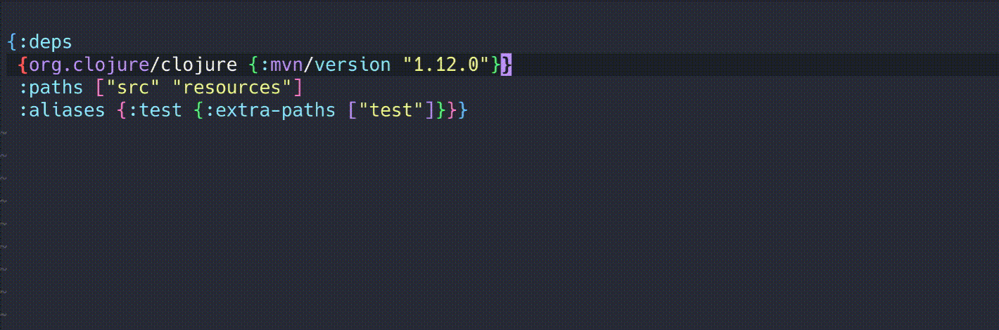

Features#
Below you can find all available features that clojure-lsp provides with examples using Emacs lsp-mode as the client.
LSP features#
Find a function/var definition#

Find defprotocol/defmulti implementations#

Find a function/var declaration in the ns#

Find all references of a function, var, keyword or namespace alias#

Show all workspace/project symbols#

Show all symbols on current file#

Rename symbols#

Also, it's possible to live rename symbols on the same buffer with linkedEditingRange feature.
Document highlight on hover showing symbol usages#

Documentation and clojuredocs integration#

Java support#
To understand what is supported and how to configure it, check the settings section.

Completion#

Library names and version completion#

Snippets#
Snippets are templates that make it easier to enter repeating code patterns, such as common functions/forms, they are available during completion. Tabstops are defined as $number with $0 as last tabstop.
Check all available snippets here
| name | description | raw content |
|---|---|---|
comment |
Insert comment block | (comment\n ${0:body}\n ) |
comment-heading |
Insert comment Header | ;;;;;;;;;;;;;;;;;;;;;;;;;;;;;;;;;;;;;;;;;;\n;; ${1:Namespace summary title}\n;;\n;; ${2:Brief description}\n;;;;;;;;;;;;;;;;;;;;;;;;;;;;;;;;;;;;;;;;;;\n\n$0 |
comment-separator |
Insert comment separator | ;; ${1:Namespace summary title}\n;;;;;;;;;;;;;;;;;;;;;;;;;;;;;;;;;;;;;;;;;;\n\n$0 |
rich-comment |
Insert rich comment |
(comment
$0
#_())
|
rich-comment-rdd |
Insert rich comment rdd block |
#_{:clj-kondo/ignore [:redefined-var]}\n(comment\n $0 #_()) |
rich-comment-hotload |
Insert rich comment library hotload |
#_{:clj-kondo/ignore [:redefined-var]}\n(comment\n ;; Add-lib library for hot-loading\n (require '[clojure.tools.deps.alpha.repl :refer [add-libs]])\n (add-libs '{${1:domain/library-name} {:mvn/version \"${2:1.0.0}\"}$3})\n $0\n) |
condp |
Insert condp | (condp ${1:pred} ${2:expr}\n $0) |
def |
Insert def | (def ${1:name} $0) |
def- |
Insert def private | (def ^:private ${1:name} $0) |
def-doc |
Insert def with docstring | (def ${1:name}\n \"${2:docstring}\"\n $0) |
defmethod |
Insert defmethod | (defmethod ${1:name} ${2:match}\n [${3:args}]\n $0) |
defmulti |
Insert defmulti | (defmulti ${1:name} ${2:dispatch-fn}) |
defn |
Insert public defn | (defn ${1:name} [$2]\n $0) |
defn-doc |
Insert public defn with docstring | (defn ${1:name}\n \"${2:docstring}\"\n [${3:args}]\n $0) |
defn- |
Insert private defn | (defn%s ${1:name} [$2]\n $0) |
defprotocol |
Insert defprotocol | (defprotocol ${1:Name}\n $0) |
defrecord |
Insert defrecord | (defrecord ${1:Name} [${2:fields}]\n ${3:Protocol}\n $0) |
deftype |
Insert deftype | (deftype ${1:Name} [${2:fields}]\n ${3:Protocol}\n $0) |
fn |
Insert fn | (fn [${1:arg-list}] $0) |
for |
Insert for | (for [${1:item} ${2:coll}]\n $0) |
if |
Insert if | (if ${1:test-expr}\n ${2:then-expr}\n ${3:else-expr}) |
kwargs |
Insert keyword args | {:keys [${1:keys}] :or {${2:defaults}}} |
let |
Insert let | (let [$0]) |
letfn |
Insert letfn | (letfn [(${1:name} [${2:args}]\n $0)]) |
ns |
Insert ns | (ns ${1:name}\n $0:references}) |
ns-doc |
Insert ns with docstring | (ns ${1:name}\n \"${2:docstring}\"\n ${0:references}) |
require |
Insert ns :require | (:require [${1:namespace}])$0 |
require-as |
Insert ns require with :as alias | (:require [${1:namespace} :as ${2:alias}]$3) |
require-refer |
Insert ns :require with :refer | (:require [${1:namespace} :refer [$2]]$3) |
require-rdd |
Insert require for rich comment experiments | (require '[${1:namespace} :as ${2:alias}]$3)$0 |
req-as |
Insert single require dep :as alias | [${1:namespace} :as ${2:alias}] |
req-refer |
Insert single require dep with :refer | [${1:namespace} :refer [$2]] |
import |
Insert import | (:import [${1:package}]) |
use |
Insert require refer preferred over use | (:require [${1:namespace} :refer [$2]]) |
deps-alias |
Insert alias with extra path & deps |
:${1:category/name}\n {:extra-paths [\"${2:path}\"]\n :extra-deps {${3:deps-maven or deps-git}}}$0 |
deps-maven |
Insert maven dependency | ${1:domain/library-name} {:mvn/version \"${2:1.0.0}\"}$0 |
deps-git |
Insert git dependency |
${1:domain/library-name}\n {:git/sha \"${2:git-sha-value}\"}$0 |
deps-git-tag |
Insert git tag dependency |
${1:domain/library-name}\n {:git/tag \"${2:git-tag-value}\"\n :git/sha \"${3:git-sha-value}\"}$0 |
deps-git-url |
Insert git URL dependency |
${1:domain/library-name}\n {:git/url \"https://github.com/$1\"\n :git/sha \"${2:git-sha-value}\"}$0 |
deps-local |
Insert local dependency |
${1:domain/library-name} {:local/root \"${2:/path/to/project/root}\"}$0 |
deftest |
Insert deftest clojure.test |
(deftest ${1:name}-test\n (testing \"${2:Context of the test assertions}\"\n (is (= ${3:assertion-values}))$4)) $0 |
testing |
Insert testing clojure.test |
(testing \"${1:Context of the test assertions}\"\n $0) |
is |
Insert is clojure.test | (is (= ${1:assertion-values})) |
Custom snippets#
User can register additional custom snippets. For more information, check the snippets config documentation.
Code actions#
See below for screenshots.
Code lenses showing symbol references#

Format a whole file or range#

Signature help#

Semantic tokens#
The LSP server is the best to say what is the semantic value of a token on the editor, semantic tokens allows server return to client all tokens of a buffer and how client show apply highlight.
Note: server return the semantic token (e.g. function) and the client/editor apply the color that matches the user's theme.

Call hierarchy#
Show the incoming or outgoing call hierarchy of a function/variable as a lazy tree
Incoming#
Show functions that call the current one recursively

Outgoing#
Show functions that the current one call, recursively

Test Tree#
Show the tests tree hierarchy of a file

Project tree#
Show the project tree ns and external dependencies.

Diagnostics (linter)#
There are 3 diagnostics providers currently:
- clj-kondo: most diagnostics come from here, configurations of these linters should be done on clj-kondo config side, for more information on how to configure clj-kondo check here
- clojure-lsp: linters built-in + custom linters.
- clj-depend: optional namespace layer diagnostics.
Built-in linters#
Below you can find the clojure-lsp built-in linters:
clojure-lsp/unused-public-var#

For more information on how to configure it, check the diagnostics settings section.
clojure-lsp/different-aliases#

For more information on how to configure it, check the diagnostics settings section.
Custom linters#
Clojure-lsp support linters that users or libs decide to create, these linters can use clojure-lsp db analysis to build whatever linter one may want, similar to clj-kondo hooks feature but with project awareness support and more robust test support.
For more information on how to configure it, check the diagnostics settings section.
clj-depend#
Clojure-lsp has a optional integration with clj-depend, making it easier to configure namespaces relationship.
For more information on how to configure it, check the diagnostics settings section.
Stub generation#
It's possible to configure clojure-lsp to generate and analyze stubs for specific namespaces available on your project classpath, this is useful for closed source dependencies like datomic.api, with that clojure-lsp will be able to make most features work with those dependencies.
For more information check the stubs settings section.
Execute command#
Commands that client can request. Most code actions use these commands as actions.
Note: Most of these are available via code actions and clients or users may choose to use the code action menu to execute them instead of mapping.
All functions in clojure-lsp have a two-letter mnemonic shortcut. E.g. tf for thread-first-all. We strongly suggest that client authors and users use these shortcuts keys when choosing to map these commands to key chords or menus; this allows for users to maintain muscle memory and familiarity as they switch between clients and editors. Thank you to clj-refactor for this system and other tools that adhere to it.
LSP clients will allow you to bind these commands to shortcuts or menu items using LSP's workspace/executeCommand and passing a map with "command" and "arguments" keys.
Arguments:
- file-uri: Absolute file uri. e.x. file:///home/user/project/src/main.clj
- row: line-number of the cursor, 0 based.
- col: col-number of the cursor, 0 based.
- name: Used when introducing a name, usually a string for a valid clojure symbol.
- filename: Filename path. e.x. src/utils.clj
| Shortcut | Command | Name | Arguments | Available via code action | Example |
|---|---|---|---|---|---|
| ab | drag-param-backward | Drag param backward | [file-uri,row,col] |
 |
|
| af | drag-param-forward | Drag param forward | [file-uri,row,col] |
|
|
| ai | add-missing-import | Add import to namespace | [file-uri,row,col[,name]] |
 |
|
| am | add-missing-libspec | Add missing require | [file-uri,row,col] |
 |
|
| as | add-require-suggestion | Add require suggestion | [file-uri,row,col,ns,alias,refer] |
 |
|
| cc | cycle-coll | Cycle collection (#{}, {}, [], ()) |
[file-uri,row,col] |
||
| ck | cycle-keyword-auto-resolve | Cycle keyword auto-resolve | [file-uri,row,col] |
 |
|
| cn | clean-ns | Clean namespace | [file-uri,row,col] |
 |
|
| cp | cycle-privacy | Cycle privacy of def/defn | [file-uri,row,col] |
||
| ct | create-test | Create test | [file-uri,row,col] |
||
| df | demote-fn | Demote fn to #() | [file-uri,row,col] |
 |
|
| db | drag-backward | Drag backward | [file-uri,row,col] |
 |
|
| df | drag-forward | Drag forward | [file-uri,row,col] |
|
|
| dk | destructure-keys | Destructure keys | [file-uri,row,col] |
 |
|
| ed | extract-to-def | Extract to def | [file-uri,row,col,name] |
 |
|
| ef | extract-function | Extract function | [file-uri,row,col,name] |
 |
|
| el | expand-let | Expand let | [file-uri,row,col] |
||
| fe | create-function | Create function from example | [file-uri,row,col] |
 |
|
| ga | get-in-all | Move all expressions to get/get-in | [file-uri,row,col] |
 |
|
| gl | get-in-less | Remove one element from get/get-in | [file-uri,row,col] |
|
|
| gm | get-in-more | Move another expression to get/get-in | [file-uri,row,col] |
|
|
| gn | get-in-none | Unwind whole get/get-in | [file-uri,row,col] |
|
|
| il | introduce-let | Introduce let | [file-uri,row,col,name] |
||
| is | inline-symbol | Inline Symbol | [file-uri,row,col] |
 |
|
| ma | resolve-macro-as | Resolve macro as | [file-uri,row,col] |
 |
|
| mf | move-form | Move form | [file-uri,row,col,filename] |
||
| ml | move-to-let | Move expression to let | [file-uri,row,col,name] |
 |
|
| pf | promote-fn | Promote #() to fn, or fn to defn | [file-uri,row,col,fn-name] |
 |
|
| rr | replace-refer-all-with-refer | Replace ':refer :all' with ':refer [...]' | [file-uri,row,col,refers] |
 |
|
| ra | replace-refer-all-with-alias | Replace ':refer :all' with alias | [file-uri,row,col] |
 |
|
| rk | restructure-keys | Restructure keys | [file-uri,row,col] |
 |
|
| sc | change-coll | Switch collection to {}, (), #{}, [] |
[file-uri,row,col,"map"/"list"/"set"/"vector"] |
 |
|
| sl | sort-clauses | Sort map/vector/list/set/clauses | [file-uri,row,col] |
 |
|
| tf | thread-first-all | Thread first all | [file-uri,row,col] |
 |
|
| th | thread-first | Thread first expression | [file-uri,row,col] |
||
| tl | thread-last-all | Thread last all | [file-uri,row,col] |
||
| tt | thread-last | Thread last expression | [file-uri,row,col] |
||
| ua | unwind-all | Unwind whole thread | [file-uri,row,col] |
||
| uw | unwind-thread | Unwind thread once | [file-uri,row,col] |
||
| fs | forward-slurp | Paredit: forward slurp | [file-uri,row,col] |
||
| fb | forward-barf | Paredit: forward barf | [file-uri,row,col] |
||
| bs | backward-slurp | Paredit: backward slurp | [file-uri,row,col] |
||
| bb | backward-barf | Paredit: backward barf | [file-uri,row,col] |
||
| rs | raise-sexp | Paredit: Raise sexp | [file-uri,row,col] |
||
| ks | kill-sexp | Paredit: Kill sexp | [file-uri,row,col] |
||
| ff | forward | Paredit: Move forward | [file-uri,row,col] |
||
| fr | forward-select | Paredit: Select forward | [file-uri,row,col] |
||
| bb | backward | Paredit: Move backward | [file-uri,row,col] |
||
| br | backward-select | Paredit: Select backward | [file-uri,row,col] |
||
| gt | go-to-test | Go to test | [file-uri,row,col] |
Dev#
Server information#
Return basic information about the server.
Cursor information#
Return debug information about the element at point.